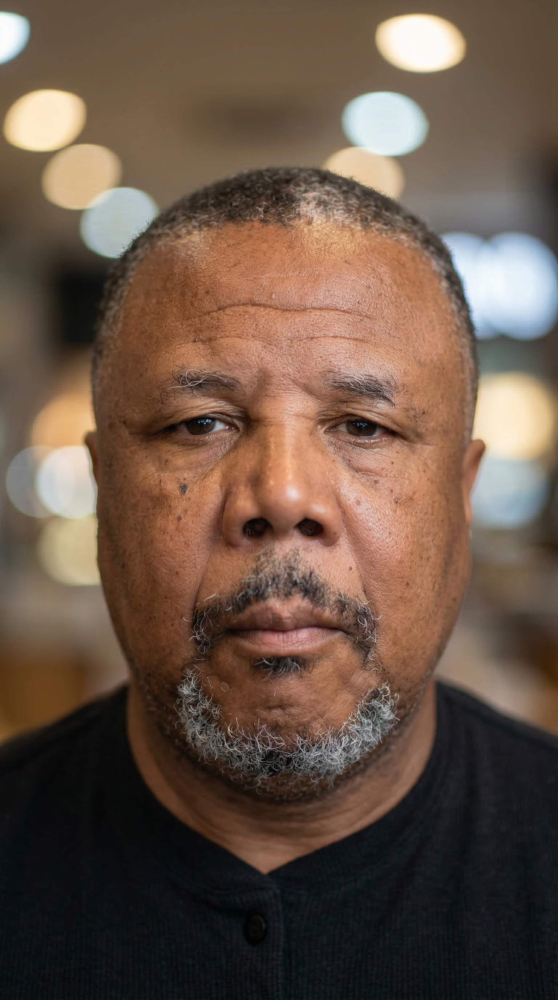

Sobre Mim

Profissional formado pela prática e pela experiência. Minha trajetória começou há mais de duas décadas na área de segurança e vigilância patrimonial — um campo que exige responsabilidade constante, atenção aos detalhes e comprometimento absoluto com a proteção de pessoas e patrimônios.
Ao longo dos anos, desenvolvi forte capacidade de observação, prevenção de riscos e resposta rápida a situações inesperadas. Trabalhar nessa área significa estar sempre alerta, identificar comportamentos suspeitos e agir com equilíbrio e profissionalismo para manter ambientes seguros.
Durante essa jornada, também atuei por mais de 10 anos em portaria e controle de acesso — função essencial para a organização e segurança de empresas, condomínios e instituições, exigindo disciplina, comunicação e postura profissional.
Experiência
Atuação em segurança e vigilância patrimonial com foco em prevenção de riscos, monitoramento de ambientes, rondas e resposta a ocorrências. Responsável pela proteção de pessoas, bens e instalações com disciplina e profissionalismo.
Recepção de visitantes, controle de entrada e saída de pessoas e veículos, orientação ao público e apoio à segurança do local. Atuação em empresas, condomínios e instituições com postura cordial e profissional.
Competências
Perfil
Busco continuar contribuindo com ambientes seguros, organizados e bem administrados, colocando minha experiência a serviço de empresas, condomínios ou instituições que valorizem profissionalismo, confiança e responsabilidade.